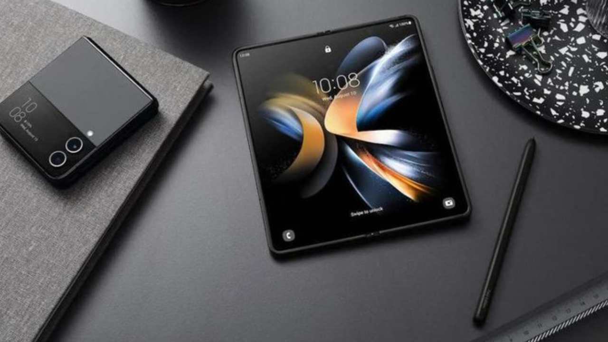

Galaxy Z Fold 5 kritik eşiği aştı! İşte detaylar
Teknik özellikleri ortaya çıkan Samsung Galaxy Z Fold 5 ve Z Flip 5 modelleri için sertifikasyon süreci başladı.
Samsung, geçtiğimiz haftalarda teknik özellikleri sızdırılan Galaxy Z Fold 5 ve Z Flip 5 modelleri için 3C sertifika başvurusu yaptı. İşte Samsung Galaxy Z Fold 5 tenik özellikleri…
Samsung Galaxy Z Fold 5 tenik özellikleri netleşiyor
Teknik özellikleri ortaya çıkan Galaxy Z Fold 5 ve Z Flip 5 modelleri için sertifikasyon süreci başladı. Samsung, her iki model için de 25W şarj sertifikası aldı.

Samsung, Galaxy Fold 5 modelinde Snapdragon 8 Gen 2 işlemciye yer verecek. Samsung için özel üretilen versiyon ile karşımıza çıkacak yeni modelde, 3.36GHz saat hızında çalışan performans çekirdeği kullanılacak. İşlemcinin diğer çekirdekleri ise 2.8GHz ve 2.0GHz frekansında çalışacak
Samsung, Galaxy Fold 5 modelinde Snapdragon 8 Gen 2 işlemciye yer verecek. Samsung için özel üretilen versiyon ile karşımıza çıkacak yeni modelde, 3.36GHz saat hızında çalışan performans çekirdeği kullanılacak. İşlemcinin diğer çekirdekleri ise 2.8GHz ve 2.0GHz frekansında çalışacakr.
TheElec tarafından yayınlanan rapora göre Galaxy Z Fold 5 ve Galaxy Z Flip 5, 2023’ün üçüncü çeyreğinde piyasaya sürülecek. Şirketin yeni modellerinin bataryası için LG Energy Solution ile anlaştığı sızdırılan bilgiler arasında yer alıyor..
LG Energy Solution’a ek olarak Samsung, 2023 katlanabilir akıllı telefonlarının pillerini de Samsung SDI ve Çin’in Amperex Technology Limited’den (ATL) tedarik edecek. Bununla birlikte, tek bir pilin maliyetinin 10-15 dolar civarında olacağı ve Galaxy Z Fold5 ve Galaxy Z Flip5’in katlanır tasarımları nedeniyle iki hücre kullanacakları için toplam pil maliyetinin 30 dolara kadar çıkacağı belirtiliyor.
Cihazın 158.5 mm x 67.5 mm x 14.5 mm – 16mm boyutlara sahip olacağı belirtiliyor. Galaxy Z Fold 5, selefine göre 3 mm uzun ve 0.4 mm daha kalın olacak